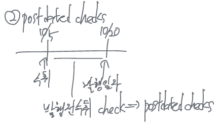

Cash & Cash Equivalents
Current assets
Cash and other assets a company expects to convert into cash, sell, consume either in one year or in the operating cycle, whichever is longer.
- Cash and cash equivalents
- short-term investments
- account receivable, note receivable, trade receivable
- inventory
Cash & Cash Equivalents
Usual means of payment, standard medium of exchange, the most liquid of assets, basis for measuring.
- 현금은 규제나 제약 없이 언제든지 (.at any time without penalty) 인출이 가능해야 한다.
Resources that consist of coins (주화), currency (지폐), cashier checks (자기앞수표), certified check (보증수표), money orders (송금수표)…
Classifications
Coin and currency on hand (통화)
- Cash on hand (시재금)과 petty cash (소액현금)도 현금에 포함된다.
Negotiable paper (통화대용증권)
- bank checks (은행발행수표), certified checks, money order, cashier’s checks, etc., 자기앞수표
Demand deposit (요구불예금)
- checking accounts (당좌예금), saving accounts (보통예금)
Cash equivalents (현금성자산)
Short-term highly liquid investment asset
- readily convertible to a known cash amount
- market value is not sensitive to interest rate changes
with original maturities of 3 months or less from the date of purchase(취득일로부터 만기가 3개월 이내 도래)- convertible to cash within 3 months
- ex) Certificate of deposit, commercial paper, US treasury obligations (T-bills, notes, bonds), money market funds
Cash에 포함되지 않는 항목
Postage stamps (우표) - prepaid expense, supplies
Postdated checks (선일자수표) - receivables, note receivable
- IOU from officers or employees

NSF checks (부도수표) - non sufficient funds checks → A/R
Bank overdrafts (당좌차월) - current liabilities (short-term borrowings)
- 마이너스통장
compensating balance (양건예금) - minimum cash balance required by a bank separately in support of bank loans → Short-term (long-term) investments
- 꺾기
Restricted cash (사용 제한된 현금) - Restricted cash is cash that has been set aside for a specific use or purpose
- 사용제한된 기간이 장기/단기 여부에 따라 current/non-current assets으로 구분됨
- Bank sinking fund (감채기금), plant expansion fund (시설확장기금)
Cash controls
auditing의 영역
to safeguard cash and to ensure the accuracy of the accounting records for cash, effective internal control over cash is critical.
Internal control over cash receipts (현금수취액에 대한 내부통제)
Over-the-counter receipts - Over the counter cash receipts from sales should be recorded on a cash register at the time of each sale
- 판매시마다 현금수위내역을 현금장부에 기록
mail receipts
Internal control over cash disbursements (현금지출액에 대한 내부통제)
일반적인 지출 통제의 기본 원칙 - 수표발행
- 예외 - petty cash disbursements
Voucher system
- 기장은 간소화하고 출납을 정확하게 기록하기 위해 모든 거래를 지출결의서를 사용하여 증빙으로 처리하고 전표 대신에 사용하는 시스템
- 독립적인 담당자의 승인에 의해서만 지출이 가능하도록 유지하는 시스템
- voucher (바우처) - internal document sued to accumulate information for each payment and to ensure that a transaction is properly recorded
- 지불한 정보 누적 + 거래의 적절한 기록 목적으로 사용하는 내부문서
- invoice (송장, 대금청구서) - 공급자가 구매자에게 고객의 상호, 판매수량, 판매가격, 판매조건 등을 요약 및 기재해서 구매자에게 보내는 전표나 명세서
- tax invoice - 세금계산서
Electronic funds transfer (EFT) system (전자자금결제시스템)
- A disbursement system that uses computers, telephone to transfer funds from one location to another parties (전자자금이체) → 문서사용에 오류나 부정방지와 비용절감 목적
petty cash fund - 소액현금제도
내부통제 목적상 현금 보유는 최소화하고 결제대금 지급은 모두 수표를 발행하여 사용하는 것이 원칙이지만, 일상적으로 발생하는 소모품구입, 교통비 등 소액지출에 대비하여 회사내부에 최소한의 현금을 보유하는 제도

Petty cash는 항상 정액으로 유지되기 위해, 보충시 checking account (cash)에서 차감하여 회계처리한다. 만약 결산시까지 cash over and short의 원인을 발견하지 못하면 잡손실 (miscellaneous expense)로 I/S에 반영한다.
Use of a bank
현금 등에 대한 효율적인 내부통제 강화방법
은행과 관련된 문서
- bank deposit (은행 예금) - deposit slip (ticket) (입금전표)
- writing checks (수표 발행)
- bank statement (입출금내역서) - 예금자의 은행 입출금거래내역과 매일 매일의 잔액을 확인해주는 내역서
- bank reconciliation - checking account에만
Bank reconciliation (은행계정조정표)
회사측 당좌예금잔액 (checking account balance)과 은행측의 예금잔액 (bank statement balance)의 차이가 있을 때에 차이의 원인을 조사하여 잔액을 일치시키기 위해 작성
차이 원인 - time lags (시차) or errors

goods in transit (미착상품) - contract term에 따라 소유권 다름
은행측 조정사항
Deposits in transit (outstanding deposits: 은행미기입예금)
- deposit recorded by the depositor but not yet recorded on the bank statement.
- 영업시간 후 입금, 회사는 입금일자 기준 입금 기록하였으나 은행에서는 다음날 입금으로 기록되어 서로 일치하지 않는 경우를 말하며 은행측의 계정잔액에 가산
outstanding checks (기발행미인출수표)
- checks deducted on the depositor’s records, but not yet received by the bank for payment
- 회사는 당좌수표를 발행하여 거래처에 지급한 후 출금으로 기록하였으나 은행에서는 아직 지급제시되지 않아 인출되지 않은 경우를 말하며 은행 측의 당좌에금잔액에서 차감
Error 조정 - 오류가 발생한 은행측 잔액에서 가감
회사측 조정사항
회사측 당좌예금원장 잔액에서 가감할 사항
- collection of receivable (채권추심 - 회사측에 가산)
- bank service charges, interest expense (수수료 및 이자 - 회사측에서 차감)
- non-sufficient funds (NSF) check (부도수표 - 회사측에서 차감)


Statement presentation
회계처리는 cash, cash equivalents와 같은 각각의 세분화된 계정으로 처리하지만, B/S에 표시할 때 cash and cash equivalents로 통합한 계정을 사용하여 표시
cash equivalents (현금성자산)
highly liquid investments, with maturities of three months or less when purchased
사용이 제한된 예금 (restricted cash)
footnotes 공시가 요구
사용의 제한이 1년 이내 - current asset
사용의 제한이 1년 초과 - non-current asset